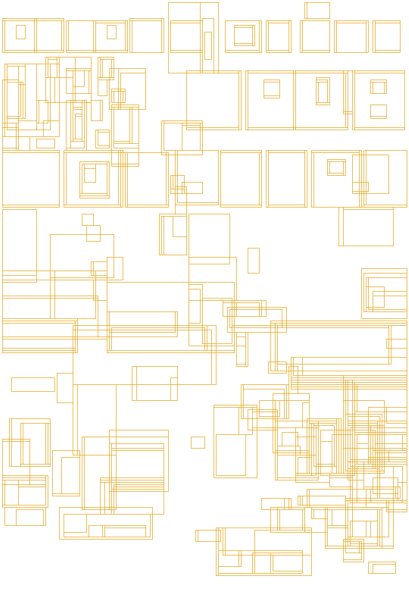
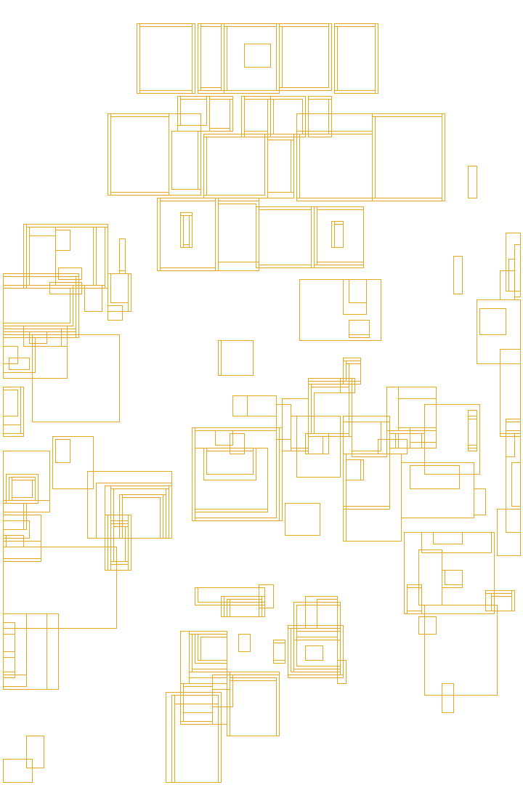
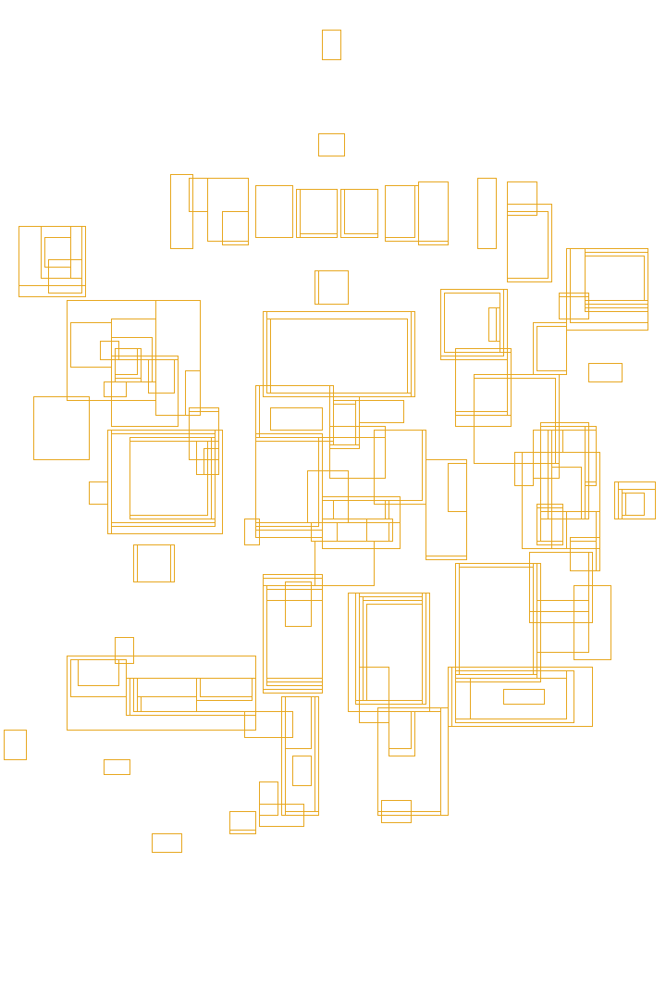
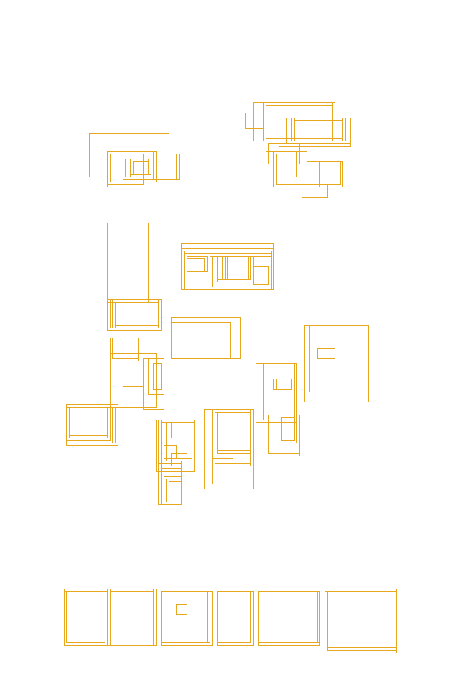
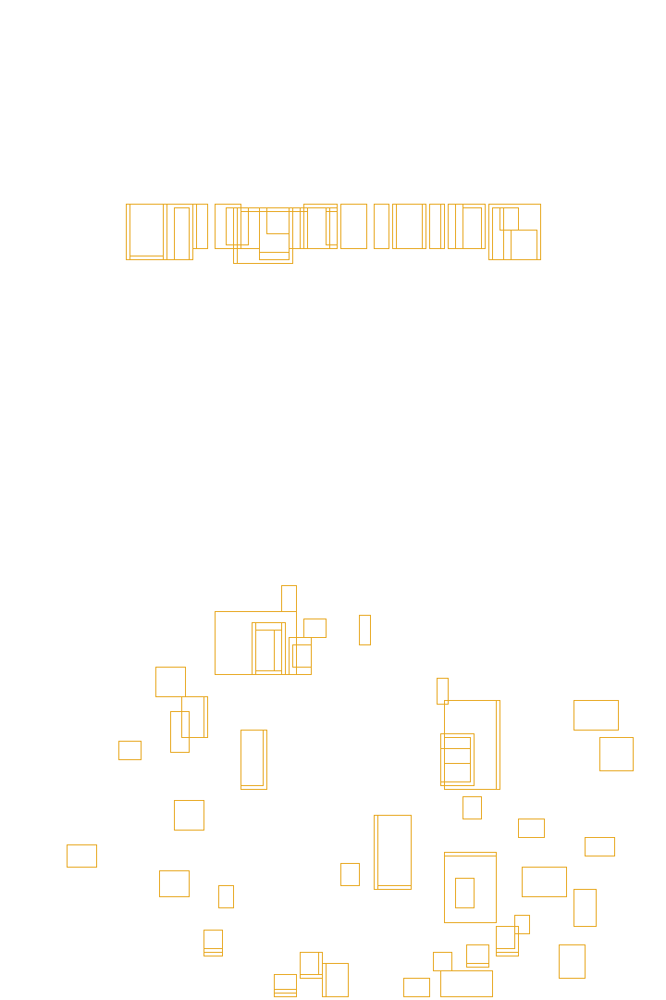

I was scrolling Netflix one day looking for a horror movie. And something hit me.
The posters looked different from what I remembered.
Back when I rented horror on VHS, the boxes screamed at you. Bright colors. Big faces. Blood red. You had two seconds to decide. The poster was the whole pitch.
But now? The new sheets look quiet. Dark. Sometimes just black with one word. No faces. No colors. Nothing jumping out.
I love horror films. I've watched them my whole life. I also love data — finding patterns in things.
So I started wondering: when did horror stop shouting? Did the posters actually change, or is it just me? Because if they did, that meant something. It meant fear looked different now.
I decided to find out. I pulled 33,622 horror posters — from 1900 all the way to 2026 — and I measured them. Colors. How dark they are. What's on them. Everything. What I found is weird. And it's going to change how you watch horror posters forever.
About the data
From TMDB Horror titles I kept 33,622 English-language posters with usable art — 1900 to 2026. Filters: already released, no adult flag, no Animation, Music, or TV Movie, plus the existing exclusion lists. Then I measured every sheet the same way. The fine print is at the end, if you want it.
Exhibit A · The instruments
How a Sheet
Is Measured
Every chart that follows is built from the same instruments. Here they are, on one poster — Halloween (1978). Tap a measure to see how it is built, and how to read the number.

Tap a measure
How it's built
How to read it
Same instruments. Now the whole century.
Part I · Color River
Black Took the Sheet
Look at the colors. In the 1950s, horror posters were warm — red, orange, pulp heat. Then slowly, everything turned black. The '80s get a quick flash of blue (neon fear). It doesn't last. Black wins. Black keeps winning. The warm colors never really come back.
The warm '50s aren't random. That was the atomic age — bright reds and radioactive greens sold "COLOSSAL TERROR!" at drive-in theaters. The blue flare in the '80s? That's VHS neon, the video-store era. And the black flood that never recedes? That's horror learning to be scary without color at all.
FULL CENTURY — n = 33,622 posters (TMDB), mean share per decade.
One real poster per hue family the chart measures — the sheet where that band actually dominates, per era.
On phones: swipe each row across the six eras. Showing Reds & Dark first — the two bands that drive the story.
Selected by dominant hue-band pixel share (same six families as the river), favoring recognizable illustrated sheets over blank title cards.
Part II · Darkness
The Light Never Came Back
I expected brightness to go up and down, like a normal trend. But this wasn't normal. Horror posters got darker every single year for 60 years. Then… nothing. The light never came back.
It isn't a slide — it's a mountain. Shadow climbs to a daylight peak around 1970, then horror descends for fifty-odd years straight. No rebound.
The 1970 peak isn't a coincidence. That was the tail of the atomic age — bright posters promised "SEE! SHOCKING!" alien invasions and mutant monsters, radiating Cold War panic in reds and yellows. Then Vietnam happened. Watergate happened. Horror stopped being about fantasy monsters and became about the real world. The lights dimmed. And they never came back.
FULL CENTURY — n = 33,622 posters (TMDB), 5-yr rolling mean.
The brightest and the darkest poster the pipeline measured in each era — the two ends of the mountain.
Selected by mean L* brightness, one extreme specimen per row per era.
Part III · Red & Blood
Red Peaked After the Slashers
You'd think the '80s slashers owned the color red. They didn't. Red is horror's signature — but its real peak isn't where you'd guess. Not the slashers. The meta-horror turn of the millennium.
Why the delayed peak? The '80s slasher era was born from VHS. More than 1,300 horror films in this corpus came out in that decade — posters had to scream red from a video store shelf just to compete. But by the 2000s, red had become a language. Meta-horror (Scream, Saw, Final Destination) used blood as an aesthetic — not a threat.
FULL CENTURY — n = 33,622 posters (TMDB), 5-yr rolling mean.
What the reddest poster in each era actually looked like — and, just as telling, what a horror poster with essentially no red looks like in the same years.
Selected by red-pixel share (HSV red-hue mask), extremes per era.
Two Kinds of Blood
Blood Left the Color Behind
Here's the weird part. Red and blood aren't the same thing. The chart above measured a color. This one measures a concept: does this look like blood, even if it isn't red? For fifty years the two measures move together. Then, with the slashers, they split — the color stops rising, but blood on the sheet keeps climbing for another thirty years.
The split makes sense: after the '80s slasher explosion, blood became a symbol — not just a color. It could be black, brown, dark red, or even implied. Meta-horror posters (Scream, Saw) treated blood as a language everyone already understood. You didn't need to paint it red anymore. The audience knew.
Pixel-red: FULL CENTURY, n=33,622 (TMDB). Model-detected blood: FULL RUN, n=33,622, CLIP zero-shot per 2×2 poster patch — validated against hand-inspected artwork (Jaws, Friday the 13th, Blair Witch) before trusting it. Decade means.
Where the two measures in the chart above actually disagree, poster by poster: high pixel-red with zero semantic blood detected, and the reverse.
Both rows drawn from the full-run blood model (n=33,622) as the chart above; "blood" = clip_blood zero-shot score. Bottom-row specimens hand-checked for literal blood — early high scores often fire on red cloth or type instead; the first cell is the earliest verified case shown (1959).
Part IV · Faces & Monsters
The Face Retreats.
The Ghost Returns.
There's something primal about a face staring back at you from a poster. It tells you what to fear. So I asked a simple question across the whole century: who looks back from the sheet? First the human face. Then the creature. Together they tell one story: horror learned to sell dread without a star close-up — while the throne of the monster kept changing hands. And the ghost bookends both ends of the timeline.
The vanishing face. There's something primal about a face staring back from a poster: it tells you what to fear. In the 1940s that stare was nearly mandatory — 87% of sheets had one, the century's peak. The rolling curve hits 91% in 1945. Today, fewer than half do. Horror learned to be scarier by showing you less. What's scarier than a monster? Absence. And hiding inside the long retreat, one twist: the late '90s didn't add faces, it zoomed in on them. Average face size peaks in 1998 — the celebrity close-up era — at nearly twice its historic share of the sheet.
The 1940s face peak makes sense: Universal built the horror genre on painted portraits of Dracula, Frankenstein, the Mummy. The monster was the movie. But by the 2010s, elevated horror (A24, Hereditary, Midsommar) taught us the opposite: what you don't see is scarier. The face vanished because our fear turned inward — we stopped fearing monsters and started fearing our own minds.
FULL RUN — n = 33,622 posters (TMDB), YuNet face detection (validated against hand-checked artwork), 5-yr rolling mean. Counts are floors: small, profile, tilted, or heavily painted/illustrated faces can escape the detector.
The two faces this chart is actually made of: the extreme close-up, and the poster with no detectable face at all.
Selected by YuNet face-detection output (n_faces, face bounding-box area) — the close-ups shown fill roughly half to all of the sheet. Zero-face row: hand-checked so the sheet really has no readable human face (silhouette, creature-from-behind, egg, light-for-a-head) — not detector misses on painted or tilted faces, which YuNet also produces.
The monster census. When the human face retreats, something else often fills the stare. We asked a vision model one question about every poster: what creature is on it? The answer is a dynastic succession — with one frame around it: the century begins and ends with the ghost. The chart keeps the ghost and the masked killer lit; the other thrones stay dim until you tap or hover a line.
FULL CENTURY — n = 33,622 posters, CLIP zero-shot vs 18-creature taxonomy (validated 10/10 on hand-checked artwork; labels below 0.5 confidence excluded). Shares are conservative floors; pre-1950 decades carry smaller samples.
Two real posters per era for whichever creature actually held the throne, per the chart above.
Selected by top CLIP-classified confidence within each era's reigning label(s) named in the chart's own copy above — where two creatures co-reign or hand off mid-era, one specimen of each.
Part V · The Quieting
Horror Lowered Its Voice
Picture a 1950s shelf: painted, dimensional letters SHOUTING at you. Now lean into a 2020 lobby card — one thin word on black. You have to get closer to read it. That whisper is scarier than the shout. Three quieter revolutions, measured across every poster. First: the silent-era sheets climb to the "SEE! SHOCKING!" peak of the mid-'50s — then horror spends seventy years lowering its voice, down to today's near-silent artwork.
The 1950s shout wasn't random — drive-in theaters were exploding. Posters had to grab you from your car window at 50 feet. By 2020, posters became thumbnails on Netflix. You browse them at arm's length, on your couch. The volume dropped because the distance did. Fear doesn't need to shout anymore. It just needs to be seen.
FULL RUN — n = 33,622 posters (TMDB), MSER text-region proxy, 5-yr rolling mean. Trend-comparable across eras; absolute level is an upper bound.
What "text-like coverage" actually flags, poster by poster: five specimens spanning the shout-to-whisper arc, from the atomic-pulp peak down to a single quiet word. The amber boxes below are the real output of the same MSER pass charted above — not illustrative, detected, photographic texture and false positives included.

Attack of the Crab Monsters (1957)The title alone eats the top third of the sheet — then the detector keeps firing on every glint, shadow and film-grain fleck in the pin-up art below it. This is the "upper bound" caveat made visible: real lettering and pure texture trip the same wire.
text-like coverage 61% (dataset high)

Night of the Living Dead (1968)Still a shout — three stacked words command the top third, boxed almost as tightly as real lettering gets. But most of the density below comes from grain and contrast in the collaged faces, not ink.
text-like coverage 45%

Phantasm (1979)Halfway down the mountain: the logo is a fraction of the '50s peak's size, and it's nearly the only place the detector fires with any real density — the painted illustration itself stays mostly unboxed.
text-like coverage 31%

Scream (1996)One word, bottom-anchored, clean sans-serif — the detector boxes it tightly and finds almost nothing else on the sheet. The '90s "meta" look was already most of the way to today's whisper.
text-like coverage 19%

Midsommar (2019)A few stray boxes on the flowers below are nearly the whole reading — the thin serif logo barely registers as text at all. This is what the whisper looks like, pixel by pixel.
text-like coverage 9%
Boxes shown are the actual MSER glyph-candidate regions (delta=5, 15–2,000px² area, 0.1–12 aspect ratio) detected at the same 180px analysis width used across the full run — not merged or cleaned up. The scatter across photographic texture above is the method's honest failure mode: trend-comparable across a century, not a precise per-poster reading.
Second: posters became obsessively symmetric. Mirror-balance climbs relentlessly and then leaps after 2010 — the measurable fingerprint of elevated horror's centered, ritual compositions.
FULL RUN — horizontal mirror similarity (0–1), 5-yr rolling mean.
What mirror similarity actually catches, poster by poster: fold each sheet on the white center line below and ask, pixel by pixel, how far the left half is from the right half's reflection. High scores mean the two halves nearly match; low scores mean they don't. We dropped the live difference heatmap — on asymmetric sheets it just looked like a second, flipped poster — so what you see is the fold the score uses, plus the number.

Braid (2019)A kaleidoscope collage built to be mirrored — skulls, faces and antlers folded around dead center. About as close to a true reflection as an illustrated poster gets.
mirror similarity 0.98

History of the Occult (2020)A face framed dead-center, hands mirrored on both temples — exactly the "centered, ritual" composition the chart above says elevated horror fell for after 2010.
mirror similarity 0.98

Get Out (2017)The figure is dead-center — but the background is split black-left, white-right. To a person this reads as a balanced, deliberate composition. To a pixel-mirror test it's a near-total mismatch: a real gap between "centered" and "symmetric."
mirror similarity 0.45

The Hitcher (2007)A single figure planted hard on one side of the sheet, empty road on the other — fold the poster on the white line and the two halves don't match.
mirror similarity 0.60

Ghost Estate (2019)The single lowest mirror-similarity score in the entire 33,622-poster dataset — on a poster that is, thematically, about a black/white split down the middle. The design quotes symmetry; the pixels don't deliver it.
mirror similarity 0.10 (dataset minimum)
White line = the fold the score uses. The pipeline measures per-pixel |gray − mirrored gray| at 64×96 across that midline — high scores mean the two halves nearly match; low scores mean they don't. Caveat: this is pixel-value mirror-match, not human-perceived balance — a centered subject on a split-tone background can score as "asymmetric" even when it reads as balanced. n = 33,622 (TMDB), full run.
And third: the compositions themselves stopped leaning. We measured how much of each poster's linework — a blade, a slashed logo, a body thrown off-axis — runs on a diagonal rather than sitting flat and upright. It peaks in the atomic-pulp '40s and '50s, then falls for seventy straight years: today's horror poster stands up straight.
FULL RUN — n = 33,622 posters, share of Hough-detected line length at a 25–65° angle, 5-yr mean. A real share of this is stylized diagonal title lettering, not only figure pose — see Sources.
What does a high diagonal_score actually look like on the sheet? Five specimens the algorithm flagged, spanning five decades, none of them repeats from Exhibit A or B. The red dashed lines below are the real output of the same Hough-transform pass charted above — not illustrative, detected. Watch each sheet dim so the lines can take the stage.
Doctor X (1932)The title lettering isn't near a diagonal — it is one. A giant yellow "X" slashes corner to corner, doing triple duty as logo, warning sign, and composition.
diagonal score 0.65
It Came from Outer Space (1953)The fleeing cast is arranged on one long sightline toward the saucer's glow, and the stacked title climbs the same angle up the right edge.
diagonal score 0.58
The Howling (1981)Four claw-rips tear across the frame on a consistent diagonal, dragging the eye from the screaming mouth up to empty space — violence rendered as pure geometry.
diagonal score 0.64
Spawn (1997)One uninterrupted cape edge runs the full length of the sheet, corner to corner — the whole silhouette built as a single diagonal blade.
diagonal score 0.76
AVP: Alien vs. Predator (2004)Two creature heads, two studios' worth of IP, arranged along one diagonal seam — Alien upper-left, Predator lower-right, the rivalry staged as a fault line.
diagonal score 0.69
Lines shown are the actual longest Hough segments (of ≥25 total per poster on average) that fell in the 25–65° diagonal band for that specimen, at the same 180px analysis width used across the full run. Animation dims the artwork so the detected segments can be read; hover any poster to pause.
Part VI · Lettering
Fear Stopped Shouting Its Name
Color wasn't the only language on the sheet — so was the title. And titles got quieter too. In the 1940s, 62% of posters wore ornate display lettering. Barely 3% were minimal. By the 2020s that flipped — ornate down to 12%, minimal up to 29%, now the single largest register. Fear stopped shouting its own name.
The 1940s lettering was hand-painted by Universal artists like Karoly Grosz — it was craft. But by the 2010s, A24 turned typography into prestige. A single thin word on black doesn't just look modern — it says: this movie is art, not a monster movie. Ornate became "cheap." Minimal became "elevated." The letters changed because the marketing did.
FULL CENTURY — n = 33,622 posters (TMDB). Registers are quintiles of an ornate↔minimal typographic axis (CLIP zero-shot on the whole poster: similarity to "ornate hand-drawn display lettering" minus "clean minimal type"). Validated against hand-ranked specimens (corr 0.81); decade trend r = −0.93. This measures the decorative character of the title treatment, not a specific typeface — a proxy, honest about its limits: reading the exact letterforms of stylized horror titles defeats OCR and font-ID models alike.
The most- and least-ornate title treatment the model found in each era. Fear's lettering thins from painted, dimensional logos to a single quiet word.
Thirds Perfect,
Still Off Balance
Every poster is a design decision, not just a color choice. We measured three things per sheet — rule-of-thirds placement, saliency balance, and shared alignment lines between design blocks — with plain OpenCV geometry. The three specimens below are not the same overlay: Jaws and Halloween show thirds + balance; The Exorcist shows the third measure, alignment, which only reads when separate credit/title blocks share a line.
thirds + balance
Jaws (1975)The shark-and-swimmer mass (amber box) centers almost exactly on a thirds intersection (amber dot vs. white centroid dot) — and the saliency-weighted "visual weight" (red dot) lands almost dead on true center (hollow ring). Two independent measures agree: this is a textbook-balanced shot.
thirds distance 0.15 · balance offset 0.04 — both near-best among the classics we spot-checked
thirds + balance
Halloween (1978)By rule-of-thirds this is the best-placed shot we checked — the knife-and-pumpkin mass sits right on an intersection. But its visual weight (red dot) is nowhere near center: the black void below empties two-thirds of the frame on purpose. Thirds-perfect and off-balance can both be true on the same poster — and here, that imbalance is the point.
thirds distance 0.14 · balance offset 0.25 — deliberately, not accidentally
alignment lines
The Exorcist (1973)Different overlay on purpose: alignment, not thirds. Nine separate design elements — tagline, credit blocks, the silhouette. The algorithm found shared lines: these two credit blocks, on opposite sides of the sheet, sit on the exact same horizontal (highlighted). A second, unmarked match: the tagline’s left edge lines up with the illustration’s edge.
alignment score 0.056 (lower = tighter grid) · 9 elements, 2+ confirmed shared lines
Grid & alignment via connected-component clustering of MSER text regions + gradient-magnitude contours (no LayoutParser/Detectron2 — see Sources). Balance via saliency-map centroid (OpenCV StaticSaliencySpectralResidual). Caveat: for full-bleed painted posters without one isolated figure, the "main visual mass" box can span nearly the whole sheet — thirds-distance then measures the whole composition's center of gravity, not one subject's placement. n = 33,622 (TMDB), full run.
One more shape, measured a different way — not the angle of a line, but the width of the composition itself. Picture slicing a poster into 8 horizontal strips and asking, strip by strip: how much of this row is visually "busy" — edges, contrast, detail — versus empty space? Below, the amber/red bands are that busy width, one per strip. A wide band low on the poster and a thin or missing one up top reads as a pyramid; the reverse reads as an inverted funnel. Five real specimens — none repeated from elsewhere in this piece.
Web of Deception (1994)Four faces lined up shoulder to shoulder across the full width of the bottom third — above them, almost nothing but blank space. About as literal a pyramid base as the dataset has to offer.
pyramid shift +0.56 (wide base)
The Chameleon Killer (2003)The killer's robe narrows toward the head; the row of tombstone silhouettes along the bottom edge is the widest, busiest strip on the whole sheet.
pyramid shift +0.50 (wide base)
Vampire Bats (2005)The inverse: a swarm spans nearly the full width across the top third, fangs bared dead-center — then the entire bottom half of the sheet is flat, empty black. Nothing for the bands to measure down there at all.
pyramid shift -0.56 (wide top)
The Returning (1983)The top third is pure flat black — zero measurable detail. All of this poster's visual "weight" sits low: a wide wash of color and the title block, spanning most of the sheet's width.
pyramid shift +0.56 (wide base)
The Nothing (2011)Barn doors thrown open, five figures inside — busy, wide, and consistent across the upper five-eighths of the sheet. Below the doorframe: nothing, literally, all black.
pyramid shift -0.55 (wide top)
Bands: energy-weighted horizontal spread of gradient magnitude per 8 vertical bins, drawn at their real measured width and position. Picked for a clean, unambiguous signal — filtered out logo-only title cards and letterboxed video-still posters, which can fake the same number without a real compositional pyramid behind it. Across the full 33,622-poster dataset this measure averages out to roughly zero by decade — top-heavy and bottom-heavy compositions largely cancel out. It's a real per-poster signature, not a century-level trend (unlike diagonal composition — see Part V).
Act II · Autopsy
Dissect any poster
Click any sheet in the century above — or search a title. The one-sheet takes the light table. Scroll and the same measurements we ran on all 33,622 posters peel off in layers: color, faces, lettering, creature, composition, pose.
Or start with a known nightmare
Fear Has a Century-Long Face
If you love horror films and love finding patterns in data, this is what I found: fear has a century-long face. And it's been getting quieter ever since we learned to listen to the dark.
The posters don't lie. They tell you everything about what scared us, when, and why. All you have to do is know how to read them.
Sources & methods
Film list and poster images from The Movie Database (TMDB). The published corpus is 33,622 English-language horror features, already released, with a servable poster, a valid year (1900–2026), no adult flag, and without Animation, Music, or TV Movie. Existing exclusion lists in pipeline/data/excluded_*.csv still apply. The id list is pipeline/data/canonical_ids.txt (see docs/CORPUS.md).
For each poster we extracted a 5-color dominant palette (k-means in CIELAB, saturation-weighted), mean brightness (L*), mean saturation, share of near-black pixels, share of blood-red pixels, and hue-family distribution. Face counts: population statistics use YuNet detection at analysis resolution (floors — small, tilted or heavily stylized faces can escape); the counts shown on individually displayed specimens are hand-verified against the artwork. Chart notes spell out each measure where it appears.
Base dataset by Tanya Shapiro (TidyTuesday 2022). This product uses the TMDB API but is not endorsed or certified by TMDB. Full code and data on GitHub. Industry context: Stephen Follows' Horror Movie Report.